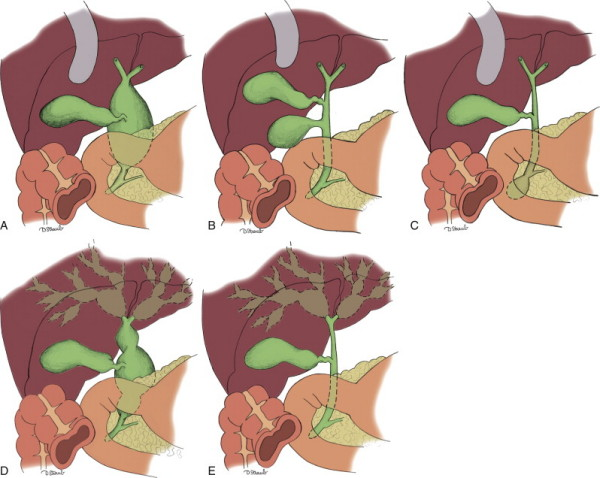

Bile Duct Cystic Disorders (Choledochochal Cysts)
DEFINITION
A rare malformation of the intra or extrahepatic bile ducts, and
possibly leading to cancer
if not treated.
'Choledochal cysts' is a misnomer as these lesions usually extend
beyond the duct.
top D I A B M
I M home
INCIDENCE
Rare.
But notable for high morbidity and mortality
Age
Usually before 16 yrs.
20% in adult life.
Sex
F>M 4:1
Geographic
Much more common in East Asia compared with West.
top D I A B M
I M home
AETIOLOGY
Dilation of the intra or extrahepatic bile ducts.
Cause unknown.
- multiple theories proposed:
--> anomalous pancreatobiliary duct jx in many with type I cysts
--> reflux of pancreatic juice; cystic degeneration of duct
- increased ductal pressure is another theory
- abnormal SoO fx implicated in some.
- rare genetic predisposition.
None of these factors explain higher prevalence in Asians living in
Asia.
top D I A B M
I M home
BIOLOGICAL BEHAVIOUR
Pathophysiology
Cause problems with the flow of bile.
Can lead to cholangitis, pancreatitis, stone formation and jaundice.
May have anomalous connections between the biliary and pancreatic
ducts.
Classification
Can be classified according to shape, e.g.
- Fusiform (80%) - spindle tapering at both ends
- Saccular
- Cystic.
Most common classification is Todani modification of Alonso-Lej
system:
- 5 types of cystic disorders based on site, shape, extent.

Type I
Most common; extrahepatic (50-80%)
- IA = cystic
- IB = focal
- IC = fusiform
II = supraduodenal diverticulum of CHD; rare (2-3%)
III = cystic dilation of intraduodenal CBD (choledochocele)
(<10%)
IV = multiple, involving both intra and extra hepatic trees (IVA -
30-40%) or just extrahepatic (IVB <5%)
V (Caroli disease) = only intrahepatic biliary tree; unilobar or
bilobar. (<10%)
Complications
Untreated cysts may undergo malignant transformation in up to 2-25%.
- either arising within cyst or elsewhere in the tree.
- risk depends on age: low in children (0.7%) to 3% in 20s, to 75%
in elderly.
- wide variety of cancers associated including scc, anaplastic,
cholangiosarcoma, hepatoma, adenoCa of pancreas or gallbladder
--> but most common is of course cholangioCa.
- risk greatest for types I, IV, V.
Biliary cirrhosis is a late complication
- may be associated with portal hypertension and its consequences
Rarely present with liver failure (type V) abscess, or rupture /
bile peritonitis.
top D I A B M
I M home
MANIFESTATIONS
Symptoms
Differs much between children and adults
- children mainly get abdo pain, nausea and vomiting, mild
jaundice and abdominal masses
--> classic triad is abdo pain, jaundice and palpable mass only
seen in 10-15%; rare in adults
- adults have symptoms mimicking biliary duct disease or
pancreatitis
--> may also be an incidental finding on imaging
Local
Symptoms of cholangitis, pancreatitis, choledocholithiasis.
70% also have gallstones, hepatolithiasis or chystolithiasis.
Signs
Palpate
Maybe a lump in children RUQ.
top D I A B M
I M home
INVESTIGATIONS
Often found during workup for presumed cholecystitis or
pancreatitis.
Bloods
LFTs elevated; jaundice common.
High amylase possible.
Imaging
USS often done first.
CT may provide additional information including.
MRCP increasingly used to define anatomical detail including
pancreaticobiliary unions.
PTC may help in type IV cysts and placement of temporary
stents as required.
ERCP - must avoid pancreatic duct and may not reach proximal biliary
tree
top D I A B M
I M home
MANAGEMENT
Surgical
Definitive treatment is complete cyst excision.
- if cyst is left in-situ, there is risk of malignant
transformation.
- also relieves biliary obstruction, prevents cholangitis and
biliary cirrhosis
- and stops pancreatic reflux
Medically optimize prior to surgery
- treat sepsis / control cholangitis
Severe portal hypertension, liver failure and coagulopathy are
contraindications.
Type I disease
Right subcostal excision, exploration for malignancy
Gallbladder resected in routine open fashion.
Common bile duct mobilized, leading to choledochal cyst.
Fully Kocherize duodenum to access posterior duct and pancreas.
Cyst dissected caudally, intrapancreatic portion separated from
surrounding tissues.
USS can be used as adjunct to identify anatomy and extent,
especially when inflamed.
Duct/cyst transected as distally as possible, avoiding the
pancreatic duct.
- may need to open cyst to see it
- cyst then elevated and dissected off the portal vein.
Carefully identify anatomy.
- look at hepatic ducts for strictures
Standard 45-60cm Roux-loop reconstruction for end-side
hepaticojejunostomy.
- single layered absorbable suture
Sometimes hazardous due to surrounding inflammation
- beware malignancy, open and excise cyst lining; if difficult,
saline injection can facilitate dissection.
- try not to leave any portion of the cyst wall behind.
Type II
Simple cyst excision.
CBD closed either primarily or over a T-tube.
Avoid luminal narrowing; occ. need reconstruction.
Type III: Choledochocele
Low malignant potential
Endscopic sphincterotomy used without excising cyst
In a good candidate, surgical resection possible
- Kockherize, laterl duodenotomy, cannulation of ducts, cyst
excision, re-anastomose ducts to duodenum.
Type IV
IVB - complete extrahepatic duct excusion and Roux loop
reconstruction.
If unilobar disease in liver, may need hemi-hepatectomy.
Bilobar = complete extrahepatic excision, biliary enteric bypass,
drainage of intrahepatic tree with large-bore stents
- can reduce malignant and liver failure risk.
Type V - Caroli Disease
Complicated; biliary stasis, recurrent cholangitis, intrahepatic
abscesses; bad.
Preence of absence of hepatic fibrosis, biliary cirrhosis, portal
hypertension and extent of intrahepatic cysts dictates management
Hepatectomy if unilobar
Antibiotics, biliary drainage, as for IV
Can consider orthotopic liver transplant in diffuse disease and
complications.
Outcomes
Complications include leak, bleeding, wound infx, pancreatitis
and fistula.
Late include stricture, cholangitis, hepatolithiasis, cirrhosis,
malignancy.
- 25%+, especially with more complex disease e.g. IV
Resection reduces but does not eliminate cholangioCa risk, so all
pts need lifelong surveillance
top D I A B M
I M home